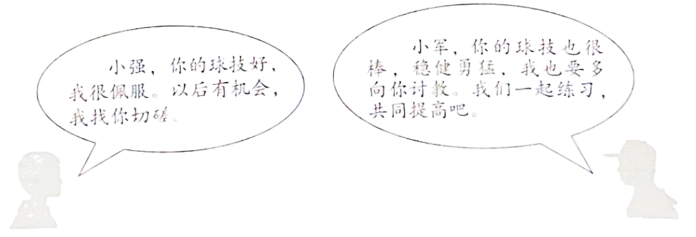

2023年北京市中考政治真题 · 选择题 第1、2、3、4、5题
1. 中国共产党第二十次全国代表大会，是在全党全国各族人民迈上全面建设社会主义现代化国家新征程、向第二个百年奋斗目标进军的关键时刻召开的一次十分重要的大会。大会高举的伟大旗帜是（ ）
A. 贯彻新发展理念B. 全面推进乡村振兴
C. 推动高质量发展D. 中国特色社会主义
2. 在某校心理游园会的“微笑欢迎你”驿站，同学们制作果蔬笑脸，画出自己的微笑卡，将自己的“坏情绪”写在卡片上丢进“情绪回收站”，微笑着在满是笑脸的背景墙前拍照留念……这些活动旨在引导学生（ ）
①学会调节情绪，化解烦恼 ②尊重他人感受，关爱自己
③保持积极心态，健康生活 ④避免负面情绪，传递温暖
A. ①②B. ①③C. ②④D. ③④
3. 小强和小军是好朋友，两个人都是校乒乓球队 主力。
主力。

他们的对话启示我们（ ）
①友谊在竞争中得到升华、深化 ②要想了解自己，最好问问别人
③集体成员交流互鉴，共同进步 ④集体要承认个人利益的合理性
A. ①③B. ①④C. ②③D. ②④
4. 打开手机软件，系统自动读屏，并一一给出语音提示。看新闻，靠文字识别技术“读”出资讯；想购物，图片转语音“描绘”商品详情……借助信息无障碍技术，视障者可以在工作、生活中，更好地使用互联网产品。这说明（ ）
A. 网络为经济发展注入新的活力
B. 网络丰富日常生活，“信息节食”很重要
C. 技术使网络环境更加便利、包容、温暖
D. 信息无障碍建设成为各行业的自觉行动
5. 社会生活离不开规则。有同学说，规则像道路上的斑马线，像悬崖边上的护栏，像过山车上的安全带。这一说法启示我们（ ）
①规则划定自由的边界，是自由的保障 ②违反规则就会受到法律的制裁
③规则是在人们达成共识基础上形成的 ④每个人要发自内心地敬畏规则
A. ①②B. ①④C. ②③D. ③④